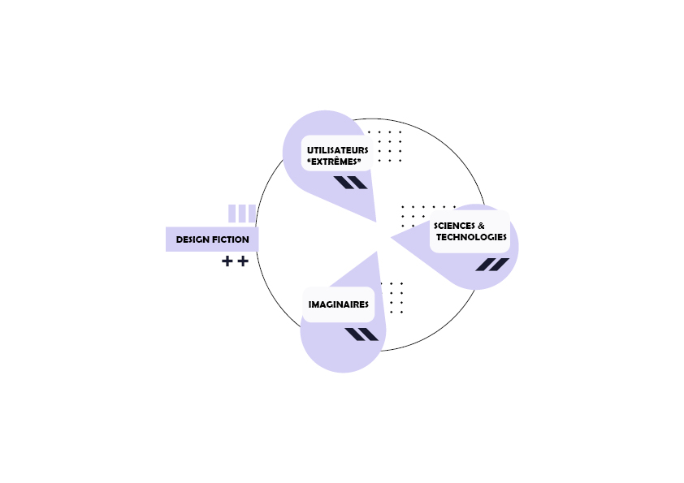

Design Thinking
Le design thinking est une approche créative et centrée sur l'utilisateur pour résoudre les problèmes et concevoir des produits, des services ou des expériences innovantes. Il implique une compréhension approfondie des besoins et des désirs des utilisateurs, ainsi que des expérimentations et des itérations rapides pour explorer différentes solutions possibles.
Il se concentre sur la collaboration, la communication et l'empathie envers les utilisateurs, en encourageant les membres de l'équipe à partager des idées et des perspectives diverses pour résoudre des problèmes complexes.
Le design thinking est souvent considéré comme un processus en plusieurs étapes, qui peut inclure l'empathie, la définition du problème, l'idéation, le prototypage et le test. Il est également flexible et itératif, permettant aux équipes de revenir en arrière et d'ajuster leur approche en fonction des commentaires et des résultats.
Contexte :
Dans le cadre de notre cours Design Thinking & Créativité, notre mission était de répondre à cette question :
La maison 2050 : À quoi pourrait bien ressembler la maison du futur ?
- À l’aide d'interviews réalisées avec des usagers et des experts, on a pu déduire différents insights : sobriété énergétique, maison partagée, habitat modulable…
- De ces constats, on a posé des macro-évolutions pour nous permettre d’imaginer quel serait le monde de 2050.
- On s’est immergés dans la science-fiction afin de trouver des éléments d’inspiration.
Le design fiction, également connu sous le nom de design spéculatif, est une pratique de design qui consiste à explorer les évolutions futures d'une thématique et les implications qu'elles pourraient avoir. Son objectif est de proposer une expérience du futur, ancrée dans le présent, afin de susciter des débats en réaction à des scénarios possibles.
En présentant une vision crédible d'un futur, le design fiction questionne les acteurs présents sur leurs désirs et craintes de demain. Le but est de stimuler la discussion et de provoquer le débat pour aider à développer des futurs technologiques qui reflètent la complexité humaine plutôt que de simples consommateurs.
Pour aboutir à un concept fort et crédible, il est essentiel d'explorer la thématique abordée en profondeur et d'adopter plusieurs points de vue différents mais complémentaires, tels que les imaginaires, les utilisateurs extrêmes et les avancées scientifiques et technologiques. Le décalage créé entre un concept futuriste et un contexte familier du présent suscite une réaction et une réflexion, ce qui constitue l'expérience d'un design fiction.
